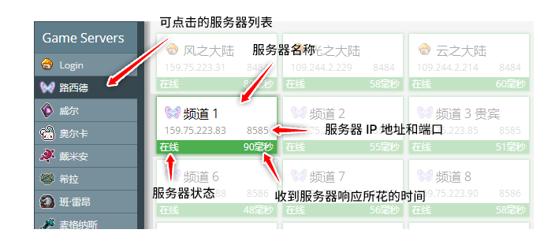

如何使用该网页？
请从以下列表中选择你想要的服务器:
-
— 即将到来 — 仍在制作中

加载中，请稍等...
你可以在该页面检查游戏服务器状态而无需打开游戏！
请从以下列表中选择你想要的服务器:
这个页面是检查你你是否能连上冒险岛服务器，且告诉你从你的网络连接到各个服务器的延迟。
你可以通过这些修改该网站的一些设定。
这些设置以 Cookies 的形式保存，以便下次访问时调用。
如需查看其它服务器状态，请点击侧栏其它服务器的选项。
We haven't added 's servers yet, but we're planning on doing this really soon!
加载中，请稍等...